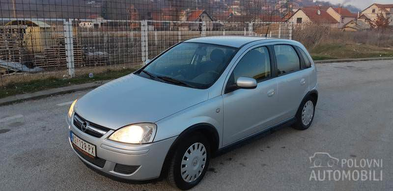
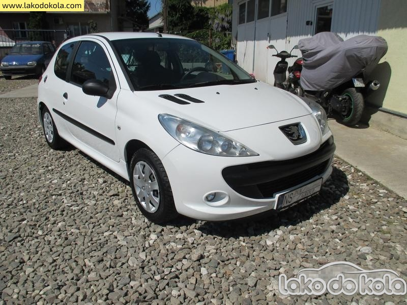

Fiat Punto - cena ~1200€
Jedni tvrde da je kupovina Punta bacanje para bez obzira koliko jeftin bio. Kao prvo, to je Fiat, kao drugo, to je Punto.
Punto smo nedavno proglasili pobednikom u izboru za najbolji auto za početnike u kategoriji do 2.000 evra. Glavni aduti koji su mu doneli pobedu bili su:
niska cena, jeftino održavanje, jeftini delovi, dostupnost zamenskih i polovnih delova, dostupnost servisa i majstora koji se razumeju u ovaj auto,
prostor u kabini u odnosu na skromne spoljašnje dimenzije.
Naravno da Punto nije bez mana. Ali kada se podvuče crta, Punto za mnoge vozače u Srbiji, ne samo za početnike, predstavlja optimalan izbor.Naš Punto je proizveden 2004, ima benzinski motor od 1.2 litra sa 80 KS, što znači da ima 16 ventila. Postoji i kod nas mnogo zastupljenija verzija sa 8 ventila i 60 KS. Što se tiče potrošnje, u gradu se kreće oko 8,5 l/100 km, a na otvorenom sa laganom nogom na gasu može da se spusti i ispod 6 l/100 km. Recimo da je prosek 7,5 l/100 km. Potrošnja je slična i kod slabije verzije. Sve možete videti u galeriji. Ovo su najbolji polovni automobili.
Ford Fiesta - cena ~2000€
Super dobra za vožnju i to je glavni kvalitet. Nijedan drugi supermini nije tako dobar za vožnju.
U paketu, sve ostalo se slaže. Ima dovoljno prostora za vožača i suvozača, a pozadi je sasvim dovoljno prostora da se smeste udobno dve odrasle osobe. Prtljažnik je lepo dizajniran, ne preveliki, ali praktičan. Odlična preglednost i dobro upravljanje će vam omogućiti odličnu gradsku vožnju, dok će na autoputu priča biti malo drugačija, pogotovu sa manjim motorima. Kod ostalih je problem buka koja nije izolovana. Pouzdan automobil, koji sa druge strane ima jeftine delove, ukoliko vam svejedno zatrebaju. Motor 1.3 kod prvih modela je najbolje izbegavati. Spor je i velike potrošnje. Motor 1.25 sa 75ks je daleko bolji sa dovoljno snage da bi Fiesta bila zabavna, a opet dovoljno štedljiv da bude naš izbor. Motor 1.4 sa 90ks je jači, ali i više troši, a i cena polovnih modela je viša. Iako Ford nije jeftin za kupovinu, troškovi održavanja su mali. Brzo gubi vrednost nakon kupovine, ali kasnije se gubitak usporava. Servis će vam retko biti potreban i možete ga obaviti u svakoj boljoj garaži. Sve možete videti u galeriji. Ovo su najbolji polovni automobili.

Opel Corsa - cena ~2000€
Ovaj Opelov model je doživeo izuzetno veliki komercijalni uspeh na tržištima širom sveta, u odnosu na automobile generacije 02-08 god. je solidan automobil, ali ništa više od toga. Unutrašnjost je bolja kod pojedinih rivala u klasi, prostora nema baš previše, a vožnja ne pruža puno uživanja. Recimo, u odnosu na konkurente koji su vremenom rasli, Korsa je ostala isti mali auto pa sada spada među najmanje u klasi. Gepek je dosta prostran za ovako mali auto, ali ne računajte na prevoz nekih vecih stvari. Probijanje kroz gradsku gužvu nije problem ali veći problemi nastaju na otvorenom putu. Previše buke dopire u kabinu (tockovi, motor) pa je bilo kakav duži put veliki napor kako za auto tako i za vozača i putnike. Modeli motora su dobri, počev od benzinskog trocilindraša sa 1.000 kubika. Tu je i 1.2 četvorocilindraš, ali ne očekujte od ovih motora neku žustrinu u vožnji, ali nedostatak snage nadomešćuju odlilčnom prosečnom potrošnjom od oko pet litara bezolovnog benzina. Korse su se pokazale kao dosta pouzdani automobili pa je teško upreti prstom u neki problematični deo na automobilu. Sve možete videti u galeriji. Ovo su najbolji polovni automobili.

Pezo 206 - cena ~1500€
Pežo 206 je bez sumnje jedan od najpopularnijih putničkih automobila manjih dimenzija, što i ne čudi ako uzmemo u obzir da je vrlo kompaktan, lak za upravljanje i praktičan za gradsku vožnju. Prodat je u više od 10 miliona primeraka. To ga čini jednim od najprodavanijih Pežo modela. Pežo 206 se proizvodio u nekoliko verzija karoserija:
hečbek sa 3 i 5 vrata, sedan sa 4 vrata, karavan sa 5 vrata, kupe kabriolet sa 2 vrata.ada su u pitanju benzinci najpre se preporučuje 1.1 ili 1.4 motor koji su sasvim pogodni za gradsku vožnju i gužvu, a čemu je ovaj tip auta i namenjen. Prosečna potrošnja goriva koja se može očekivati je oko 6 litara.
Kada je reč o dizel varijantama uglavnom se koriste HDI motori, koji su mnogo tiši i mirniji tokom rada, a potrošnja im je ista ili čak i manja u odnosu na benzince. Automobil koji se u gradskoj vožnji pokazao kao najpraktičniji i najštedljiviji jeste Peugeot 206 1.4HDI. Velika popularnost Pežo 206 modela nije slučajna s obzirom na to da nudi dobro i lako rukovanje i manevrisanje, veliku raznolikost motora, ali i atraktivan i primamljiv dizajn. Sve možete videti u galeriji. Ovo su najbolji polovni automobili.